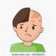

Tinea Capitis
1.Tab Griseofulvin 500mg N=40 daily
(10-20mg/kg/day) (tab 125mg)
2.Shampoo Ketoconazole 2% N=1
Or Shampoo Selenium Sulfide
نکته: طول دوره درمان به مدت 4-6 هفته است .
نکته: درمانهای جایگزین ایتراکونازول (mg/kg/day5) و فلوکونازول (6mg/kg/day)
نکته: شامپو ابتدا یک روز درمیان و سپس حداقل هفته ای دومرتبه استفاده کنند.
Kerion
1.Tab Griseofulvin 125mg N=40 daily
(20mg/kg/day)
2.Shampoo Ketoconazole 2% N=1
3.Tab Prednisolone 10mg N=10 daily for 10day
(0.5mg/kg/day)
4.Cap Cephalexin 500mg N=40 q6h
نکته: کریون با التهاب و پوسچول مشخص میشه
نکته: در موارد کریون طول درمان 6-8 هفته است.
نکته: برای جلوگیری از اسکار بهتر سریعتر درمان شود
نکته: سایرافراد خانواده نیز از شامپو بصورت روز درمیان استفاده کنند.
1️⃣ آلوپسی آره آتا
2️⃣ تریکوتیلومانیا
3️⃣ درماتیت آتوپیک
4️⃣ درماتیت سبورئیک
Drug Eruptions 5️⃣
Impetigo 6️⃣
7️⃣ پسوریازیس
8️⃣ لوپوس پوستی
9️⃣ لیکن پلان